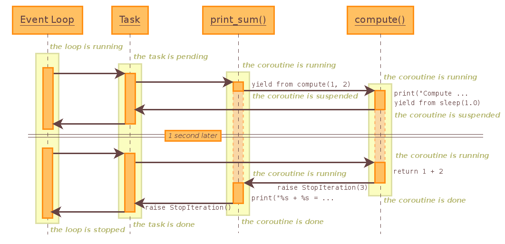

18.5.3. タスクとコルーチン¶
18.5.3.1. コルーチン¶
コルーチンは、いくつかの約束事に従うジェネーターです。文書化上、すべてのコルーチンは @asyncio.coroutine でデコレートされていますが、厳密にはこれは強制ではありません。
コルーチンは PEP 380 で導入された yield from 構文を使用しており、オリジナルの yield 構文は使用しません。
単語 “コルーチン” は単語 “ジェネレーター” のように、(関連はしていますが) 異なる 2 つの概念で使用されます:
コルーチンを定義する関数 (
@asyncio.coroutineでデコレートされた関数定義)。曖昧さの解消が必要な場合はこれを コルーチン関数 (iscoroutinefunction()がTrueを返す) と呼びます。コルーチン関数の呼び出しによって取得されたオブジェクト。このオブジェクトは、いつかは完了する計算または I/O 操作 (通常はその組み合わせ) を表します。曖昧さの解消が必要な場合はこれを コルーチンオブジェクト (
iscoroutine()がTrueを返す) と呼びます。
コルーチンができること:
result = yield from future– フューチャが終了するまでサスペンドし、フューチャ終了後その結果を返すか、伝搬された例外を送出します (フューチャがキャンセルされるとCancelledError例外が送出されます)。タスクがフューチャにあたり、フューチャと呼ばれるものはすべてタスクです。result = yield from coroutine– 他のコルーチンが結果を生成する (または伝搬された例外を送出する) まで待機します。coroutine表現は他のコルーチンを 呼び出さなくてはなりません。return expression–yield fromで待機しているコルーチンに返す結果を生成します。raise exception–yield fromで待機しているコルーチン内で例外を送出します。
コルーチンの呼び出しは、そのコードの実行を開始するわけではありません – これは単なるジェネレーターであり、実際にコルーチンの呼び出しで返されるのはジェネレーターオブジェクトであり、それをイテレートするまで何も行いません。コルーチンオブジェクトの場合、その実行を開始する方法は 2 つあります: 他のコルーチンからの yield from coroutine による呼び出し (その呼び出し側のコルーチンはすでに実行されていることが想定されています)、あるいは async() 関数や BaseEventLoop.create_task() メソッドを使用した自身の実行のスケジュール。
コルーチン (およびタスク) はイベントループが実行中の場合にのみ起動できます。
-
@asyncio.coroutine¶ コルーチンであることを示すデコレーターです。
コルーチンが yield される前に破棄された場合、エラーメッセージが記録されます。決してスケジュールされないコルーチンの検出 を参照してください。
注釈
この文書では、一部のメソッドが、Future を返す単純な Python 関数であるにもかかわらずコルーチンとして説明されています。これは、それら関数の将来的な実装の調整に制限がかかることのないよう意図的に行われています。そのような関数でコールバック方式のコードを使用する必要があった場合、その結果は async() でラップされます。
18.5.3.1.1. 例: Hello World コルーチン¶
"Hello World" と表示するコルーチンの例:
import asyncio
@asyncio.coroutine
def hello_world():
print("Hello World!")
loop = asyncio.get_event_loop()
# Blocking call which returns when the hello_world() coroutine is done
loop.run_until_complete(hello_world())
loop.close()
参考
call_soon() による Hello World の例では BaseEventLoop.call_soon() メソッドを使ってコールバックをスケジュールしています。
18.5.3.1.2. 例: 現在の日時を表示するコルーチン¶
sleep() 関数を用いて現在の時刻を5秒間、毎秒表示するコルーチンの例:
import asyncio
import datetime
@asyncio.coroutine
def display_date(loop):
end_time = loop.time() + 5.0
while True:
print(datetime.datetime.now())
if (loop.time() + 1.0) >= end_time:
break
yield from asyncio.sleep(1)
loop = asyncio.get_event_loop()
# Blocking call which returns when the display_date() coroutine is done
loop.run_until_complete(display_date(loop))
loop.close()
参考
display the current date with call_later() の例では BaseEventLoop.call_later() によるコールバックが使われている。
18.5.3.1.3. 例: コルーチンのチェーン¶
コルーチンをチェーンする例です:
import asyncio
@asyncio.coroutine
def compute(x, y):
print("Compute %s + %s ..." % (x, y))
yield from asyncio.sleep(1.0)
return x + y
@asyncio.coroutine
def print_sum(x, y):
result = yield from compute(x, y)
print("%s + %s = %s" % (x, y, result))
loop = asyncio.get_event_loop()
loop.run_until_complete(print_sum(1, 2))
loop.close()
compute() は print_sum() にチェーンされます: print_sum() コルーチンは compute() が完了するまで待ちます。
この例のシーケンス図です:
タスクではなくコルーチンオブジェクトが渡されたときに BaseEventLoop.run_until_complete() メソッドによって “Task” が作成されます。
この図では制御フローを表しており、内部で何がどう動いているのかを正確に説明しているわけではありません。例えば、sleep コルーチンは内部で BaseEventLoop.call_later() を使って 1 秒後にタスクを起動するフューチャを作成しています。
18.5.3.3. TimeoutError¶
-
exception
asyncio.TimeoutError¶ 操作は与えられた期限を超えました。
注釈
この例外は組み込みの TimeoutError 例外とは異なります！
18.5.3.4. フューチャ¶
-
class
asyncio.Future(*, loop=None)¶ このクラスは
concurrent.futures.Futureと ほぼ 互換性があります。相違点:
result()およびexception()はタイムアウト引数を取らず、フューチャがまだ終了していないとき例外を送出します。add_done_callback()で登録されたコールバックは常にイベントループのcall_soon_threadsafe()経由で呼び出されます。このクラスは
concurrent.futuresパッケージのwait()およびas_completed()関数との互換性はありません。
このクラスは スレッド安全ではありません。
-
cancel()¶ フューチャとスケジュールされたコールバックをキャンセルします。
フューチャがすでに終了しているかキャンセルされていた場合
Falseを返し、そうでない場合フューチャの状態をキャンセルに変更し、コールバックをスケジュールし、Trueを返します。
-
cancelled()¶ フューチャがキャンセルされていた場合
Trueを返します。
-
done()¶ フューチャが終了していた場合
Trueを返します。終了とは、結果が返された、例外が送出された、あるいはフューチャがキャンセルされたことを意味します。
-
result()¶ このフューチャが表す結果を返します。
フューチャがキャンセルされていた場合
CancelledErrorが送出されます。フューチャの結果がまだ利用できない場合InvalidStateErrorが送出されます。フューチャが終了し例外の集合を持っていた場合その例外が送出されます。
-
exception()¶ このフューチャで設定された例外を返します。
例外 (例外が設定されていない場合は
None) はフューチャが終了した場合のみ返されます。フューチャがキャンセルされていた場合CancelledErrorが送出されます。フューチャがまだ終了していない場合InvalidStateErrorが送出されます。
-
add_done_callback(fn)¶ フューチャが終了したときに実行するコールバックを追加します。
コールバックは 1 個の引数 ― フューチャオブジェクト ― で呼び出されます。呼び出されたときフューチャがすでに終了していた場合、コールバックは
call_soon()でスケジュールされます。引数をコールバックに渡すには functools.partial を使います。例えば
fut.add_done_callback(functools.partial(print, "Future:", flush=True))はprint("Future:", fut, flush=True)を呼びます。
-
remove_done_callback(fn)¶ “終了時に呼び出す” リストからコールバックのすべてのインスタンスを除去します。
除去されたコールバック数を返します。
-
set_result(result)¶ フューチャの終了をマークしその結果を設定します。
このメソッドが呼ばれたときにフューチャがすでに終了している場合、
InvalidStateErrorを送出します。
-
set_exception(exception)¶ フューチャの終了をマークし例外を設定します。
このメソッドが呼ばれたときにフューチャがすでに終了している場合、
InvalidStateErrorを送出します。
18.5.3.4.1. 例: run_until_complete() を使ったフューチャ¶
import asyncio
@asyncio.coroutine
def slow_operation(future):
yield from asyncio.sleep(1)
future.set_result('Future is done!')
loop = asyncio.get_event_loop()
future = asyncio.Future()
asyncio.ensure_future(slow_operation(future))
loop.run_until_complete(future)
print(future.result())
loop.close()
コルーチン関数は (1秒間かかる) 計算の責任を持ち、結果をフューチャ内に格納します。run_until_complete() メソッドはフューチャの計算を待機します。
注釈
run_until_complete() メソッドはフューチャの終了の通知を受けるため内部で add_done_callback() メソッドを使用します。
18.5.3.4.2. 例: run_forever() を使ったフューチャ¶
上の例を Future.add_done_callback() メソッド使って制御フローを明示して書くこともできます:
import asyncio
@asyncio.coroutine
def slow_operation(future):
yield from asyncio.sleep(1)
future.set_result('Future is done!')
def got_result(future):
print(future.result())
loop.stop()
loop = asyncio.get_event_loop()
future = asyncio.Future()
asyncio.ensure_future(slow_operation(future))
future.add_done_callback(got_result)
try:
loop.run_forever()
finally:
loop.close()
この例では slow_operation() を got_result() にリンクするために future を用いています。slow_operation() が終了したとき got_result() が結果と供に呼ばれます。
18.5.3.5. タスク¶
-
class
asyncio.Task(coro, *, loop=None)¶ コルーチン の実行をスケジュールします: それをフューチャ内にラップします。タスクは
Futureのサブクラスです。タスクはイベントループ内のコルーチンオブジェクトの実行の責任を持ちます。フューチャ内からラップされたコルーチンが yield した場合、タスクはラップされたコルーチンの実行をサスペンドし、フューチャの計算を待機します。フューチャの計算が終了したとき、ラップされたコルーチンはフューチャの結果か例外を取って実行が再開されます。
イベントループは協調スケジューリングを使用します: 1 つのイベントループは同時に 1 つのタスクのみ実行します。その他のタスクは、他のイベントループが異なるメソッドで実行されている場合に並列で実行されるかもしれません。タスクがフューチャの計算を待っている間、イベントループは新しいタスクを実行します。
タスクのキャンセルはフューチャのキャンセルとは異なります。
cancel()はラップされたコルーチンにCancelledErrorを送出します。ラップされたコルーチンがCancelledError例外を補足しなかった、あるいはCancelledError例外を送出しなかった場合、cancelled()は常にTrueを返します。未完のタスクが破棄された場合、それのラップされた コルーチン は完了しません。これはおそらくバグであり警告がログに記録されます: 未完のタスクの破棄 を参照してください。
Taskのインスタンスを直接作成しないでください:async()関数またはBaseEventLoop.create_task()メソッドを使用します。このクラスは スレッド安全ではありません。
-
classmethod
all_tasks(loop=None)¶ イベントループ loop のすべてのタスクの集合を返します。
デフォルトでは現在のイベントループの全タスクが返されます。
-
classmethod
current_task(loop=None)¶ イベントループ内で現在実行中のタスクまたは
Noneを返します。デフォルトでは現在のイベントループの現在のタスクが返されます。
Taskのコンテキスト内から呼び出されたのではない場合Noneが返されます。
-
cancel()¶ このタスクのキャンセルを自身で要求します。
これは、イベントループを通して次のサイクルにおいてラップされたコルーチンに投入される
CancelledErrorを準備します。コルーチンにはその後 try/except/finally を使用してクリーンアップするか要求を拒否する機会が与えられます。Future.cancel()と異なり、これはタスクのキャンセルを保証しません: 例外が補足されそれが処理されることで、タスクのキャンセル処理が遅延したりキャンセル処理が完了しない場合があります。また、タスクは戻り値を返すか異なる例外を送出する場合もあります。このメソッドが呼び出された直後は
cancelled()はTrueを返しません (タスクがすでにキャンセル済みの場合は除く)。ラップされたコルーチンがCancelledErrorで中止されたとき、タスクは (cancel()が呼ばれなかった場合でも) キャンセル済みとマークされます。
-
get_stack(*, limit=None)¶ このタスクのコルーチンのスタックフレームのリストを返します。
コルーチンが完了していない場合、これはサスペンドされているスタックを返します。コルーチンが正常に処理を完了したか、キャンセルされていた場合は空のリストを返します。コルーチンが例外で中止されていた場合はトレースバックフレームのリストを返します。
フレームは常に古いものから新しい物へ並んでいます。
任意の引数 limit には返すフレームの最大数を指定します; デフォルトでは有効なすべてのフレームが返されます。これは返される値がスタックかトレースバックかによって意味が変わります: スタックでは最新のフレームから返されますが、トレースバックでは最古のものから返されます。 (これは traceback モジュールの振る舞いと一致します。)
いかんともしがたい理由により、サスペンドされているコルーチンの場合スタックフレームが 1 個だけ返されます。
-
print_stack(*, limit=None, file=None)¶ このタスクのコルーチンのスタックあるいはトレースバックを出力します。
この出力は get_stack() によって回収されたフレームで、traceback モジュールのそれと同じです。引数 limit は get_stack() に渡されます。引数 file は出力を書き込む I/O ストリームです; デフォルトでは
sys.stderrになります。
-
classmethod
18.5.3.5.1. 例: タスクの並列実行¶
3 個のタスク (A, B, C) を並列に実行する例です:
import asyncio
@asyncio.coroutine
def factorial(name, number):
f = 1
for i in range(2, number+1):
print("Task %s: Compute factorial(%s)..." % (name, i))
yield from asyncio.sleep(1)
f *= i
print("Task %s: factorial(%s) = %s" % (name, number, f))
loop = asyncio.get_event_loop()
tasks = [
asyncio.ensure_future(factorial("A", 2)),
asyncio.ensure_future(factorial("B", 3)),
asyncio.ensure_future(factorial("C", 4))]
loop.run_until_complete(asyncio.wait(tasks))
loop.close()
出力:
Task A: Compute factorial(2)...
Task B: Compute factorial(2)...
Task C: Compute factorial(2)...
Task A: factorial(2) = 2
Task B: Compute factorial(3)...
Task C: Compute factorial(3)...
Task B: factorial(3) = 6
Task C: Compute factorial(4)...
Task C: factorial(4) = 24
タスクは作成されたときに実行を自動的にスケジュールされます。イベントループはすべてのタスクが終了したときに停止します。
18.5.3.6. タスク関数¶
注釈
以下の関数では、任意の引数 loop で下層のタスクやコルーチンで使用されるイベントループオブジェクトを設定できます。
-
asyncio.as_completed(fs, *, loop=None, timeout=None)¶ その値のイテレーターか、待機中のときは
Futureインスタンスを返します。全フューチャが終了する前にタイムアウトが発生した場合
asyncio.TimeoutErrorを送出します。例:
for f in as_completed(fs): result = yield from f # The 'yield from' may raise # Use result
注釈
フューチャ
fは fs のメンバーである必要はありません。
-
asyncio.ensure_future(coro_or_future, *, loop=None)¶ コルーチンオブジェクト の実行をスケジュールします: このときフューチャにラップします。
Taskオブジェクトを返します。引数が
Futureの場合、それが直接返されます。バージョン 3.4.4 で追加.
参考
-
asyncio.async(coro_or_future, *, loop=None)¶ ensure_future()への非推奨なエイリアスです。バージョン 3.4.4 で撤廃.
-
asyncio.gather(*coros_or_futures, loop=None, return_exceptions=False)¶ 与えられたコルーチンオブジェクトあるいはフューチャからの結果を一つにまとめたフューチャを返します。
すべてのフューチャは同じイベントループを共有しなければなりません。すべてのタスクが正常終了した場合、返されるフューチャの結果は結果のリストになります (並びは、結果が返された順ではなく、オリジナルのシーケンスの順になります)。return_exceptions が真の場合、タスクでの例外は正常終了時の結果と同様に取り扱われ、一緒に結果リスト内に格納されます; 偽の場合、最初に送出された例外が即座に伝搬され、フューチャに返されます。
キャンセル: 外側のフューチャがキャンセルされた場合、すべての (まだ完了していない) 子プロセスもキャンセルされます。いずれかの子プロセスがキャンセルされた場合、これは
CancelledErrorを送出するように扱います – この場合外側のフューチャはキャンセル されません。 (This is to prevent the cancellation of one child to cause other children to be cancelled.)
-
asyncio.iscoroutine(obj)¶ obj が コルーチンオブジェクト であれば
Trueを返します。
-
coroutine
asyncio.sleep(delay, result=None, *, loop=None)¶ 与えられた時間 (秒) 後に完了する コルーチン を作成します。result が与えられた場合、コルーチン完了時にそれが呼び出し元に返されます。
スリープの分解能は イベントループの粒度 に依存します。
この関数は コルーチン です。
-
asyncio.shield(arg, *, loop=None)¶ フューチャを待機しキャンセル処理から保護します。
命令文:
res = yield from shield(something())
上の文は以下と完全に等価です:
res = yield from something()
それを含むコルーチンがキャンセルされた場合を 除き、
something()内で動作するタスクはキャンセルされません。something()側から見るとキャンセル処理は発生しません。ただし、呼び出し元がキャンセルされた場合は、yield-from 表現はCancelledErrorを送出します。注意:something()が他の理由でキャンセルされた場合はshield()でも保護できません。完全にキャンセル処理を無視させたい場合 (推奨はしません) は、以下のように
shield()と try/except 節の組み合わせで行うことができます:try: res = yield from shield(something()) except CancelledError: res = None
-
coroutine
asyncio.wait(futures, *, loop=None, timeout=None, return_when=ALL_COMPLETED)¶ シーケンス futures で与えられたフューチャおよびコルーチンオブジェクトが完了するまで待機します。コルーチンはタスクでラップされます。戻り値は (完了した
Future, 未完のFuture) の 2 個の集合になります。シーケンス futures は空であってはなりません。
timeout で結果を返すまで待機する最大秒数を指定できます。timeout は整数か浮動小数点数をとります。timeout が指定されないか
Noneの場合、無期限に待機します。return_when でこの関数がいつ結果を返すか指定します。指定できる値は以下の
concurrent.futuresモジュール定数のどれか一つです:定数
説明
FIRST_COMPLETEDいずれかのフューチャが終了したかキャンセルされたときに返します。
FIRST_EXCEPTIONいずれかのフューチャが例外の送出で終了した場合に返します。例外を送出したフューチャがない場合は、
ALL_COMPLETEDと等価になります。ALL_COMPLETEDすべてのフューチャが終了したかキャンセルされたときに返します。
この関数は コルーチン です。
使用法:
done, pending = yield from asyncio.wait(fs)
注釈
これは
asyncio.TimeoutErrorを送出しません。タイムアウトが発生して完了しなかったフューチャは戻り値の後者の集合に含まれます。
-
coroutine
asyncio.wait_for(fut, timeout, *, loop=None)¶ 単一の
Futureまたは コルーチンオブジェクト を期限付きで待機します。timeout がNoneの場合、フューチャが完了するまでブロックします。コルーチンは
Taskでラップされます。フューチャあるいはコルーチンの結果を返します。タイムアウトが発生した場合、タスクをキャンセルし
asyncio.TimeoutErrorを送出します。タスクのキャンセルを抑止したい場合はshield()でラップしてください。待機が中止された場合 fut も中止されます。
この関数は コルーチン です。使用法:
result = yield from asyncio.wait_for(fut, 60.0)
バージョン 3.4.3 で変更: 待機が中止された場合 fut も中止されます。